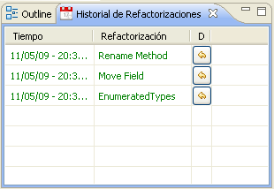
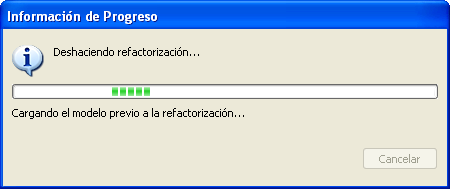
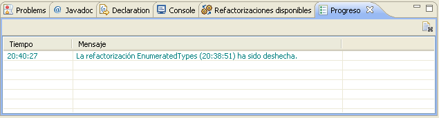
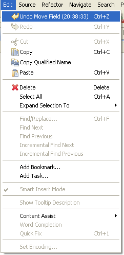

Deshacer RefactorizacionesDeshacer Refactorizaciones
Deshacer RefactorizacionesDeshacer Refactorizaciones
Cuando se utiliza el Plugin de Refactorizacion Dinamica para ejecutar refactorizaciones
sobre el código, será posible deshacer todas las refactorizaciones ejecutadas hasta un punto cualquiera del proceso.
No olvide, sin embargo, que una vez que se ejecuta una refactorización sobre un segundo proyecto Java en Eclipse,
se perderá la posibilidad de deshacer refactorizaciones ejecutadas sobre otro diferente. Además, una vez que se
solicita al plugin que deshaga un conjunto de refactorizaciones, no se podrán rehacer de forma automática,
sino que habría que volver a ejecutarlas una a una.
Existen dos formas de deshacer una refactorización, aunque los efectos de utilizar uno u otro método no son los mismos.
La forma recomendada de deshacer refactorizaciones es mediante la vista Historial del plugin.
Cada vez que se completa con éxito una refactorización, aparecerá registrada en esta vista, identificada por su hora de finalización y su nombre. Si desea retornar al estado que tenía su proyecto justo antes de ejecutar una cualquiera de las refactorizaciones que aparecen en la vista, pulse el botón de "Deshacer" que aparece junto a la refactorización más antigua que deba deshacerse.

Una vez que pulse el botón, un diálogo de progreso aparecerá y le mantendrá informado acerca del avance del proceso de la operación de deshacer.

Progreso de la operaci�n de deshacer
Cuando todas las refactorizaciones entre la que se ejecutó la última y la que se seleccionó han sido deshechas, verá que su proyecto ha vuelto al estado original anterior a la primera refactorización. Tanto la vista Historial como la de Progreso se actualizarán para reflejar los cambios.

Active la vista del "Package Explorer" en Eclipse y seleccione la opción de menú Edit > Undo.... Esto deshaá una única refactorización, y solo la última ejecutada aparecerá disponible en cada ocasión. Si desea deshacer más de una refactorización, tendría que hacerlo una a una mediante este método.
